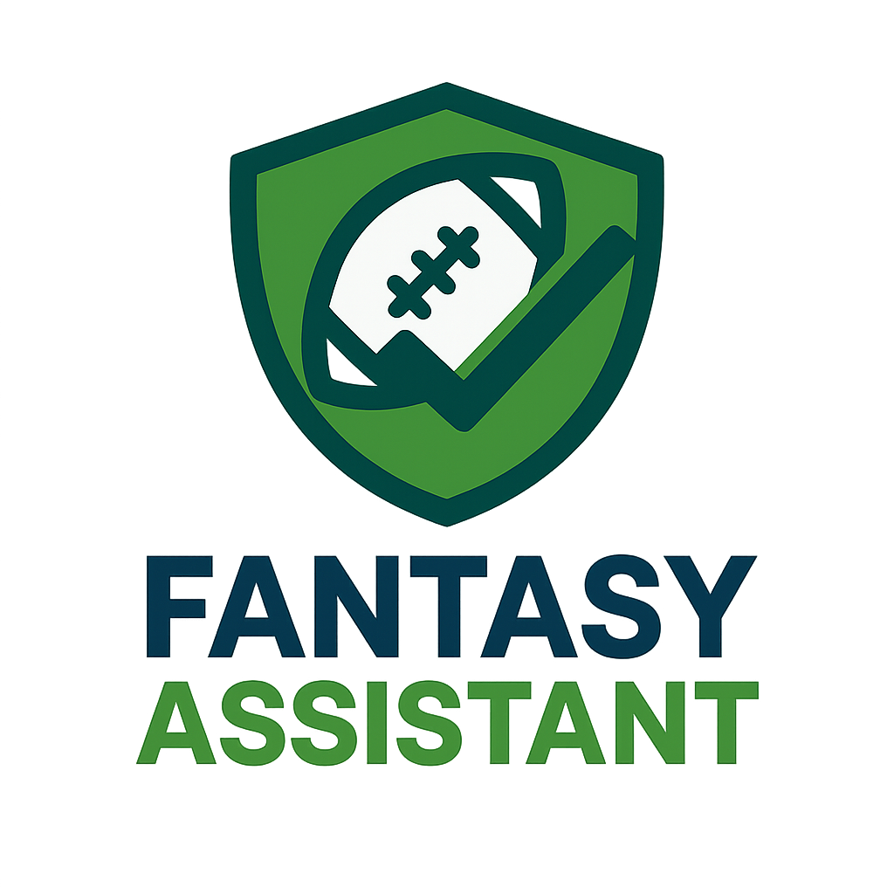

Managing fantasy teams can be stressful. Between injuires, trades, and weekly matchups, its easy to get lost in stats and second guess decisions!
From this page you can navigate to the other pages and see your current lineups, tools and learn more about our upcoming changes
We support: